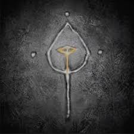
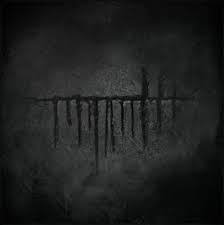
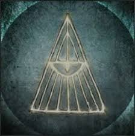
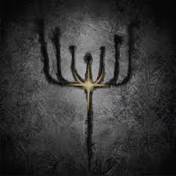

There are a total of 20 Runes that offer multiple different boosts to Hunters during the Hunt.


| Item Name | Description | |
|---|---|---|
|
Anti-Clockwise Metamorphosis Rune | A secret symbol left by Caryll, runesmith of Byrgenwerth. The twisted cross means "metamorphosis." Rotated anti-clockwise, this rune boosts stamina. The discovery of blood made their dream of evolution a reality, Metamorphosis, and the excesses and deviation that followed, was only the beginning. |
| Beast Embrace Rune | After repeated experiments in controlling the scourge of beasts, the gentle "Embrace" rune was discovered. When its implementation failed, the "Embrace" became a forbidden rune, but its knowledge became a foundation of the Healing Church. Those who swear this oath take on a ghastly form, and enjoy accentuated transformation effects, especially while wielding a beast weapon. | |
|
Beast Rune | A secret symbol left by Caryll, runesmith of Byrgenwerth. A transcription of the roar of a labyrinth beast, the bearer of the "Beast" rune has accentuated transformation effects. "Beast" is one of the early Caryll Runes, as well as one of the first to be deemed forbidden. The discovery of blood entailed the discovery of undesirable beasts. |
|
Blood Rapture Rune | A Caryll rune that transcribes inhuman sounds. "Blood Rapture" is the raw euphoria of the warmth of blood. Restores HP with visceral attacks, one of the darker hunter techniques. This rune resonates with servants of the Queen, carrier of the Child of Blood, who yearn for their Queen's blood with little hope of requitement. For them, they find solace in "Blood Rapture," that serves as a surrogate for their desires. |
|
Clawmark Rune | A Caryll rune that transcribes inhuman sounds. The "Clawmark" is an impulse to seek the warmth of blood like a beast. It strengthens visceral attacks, one of the darker hunter techniques. Although the difference is subtle, Runesmith Caryll describes the "Beast" as a horrific and unwelcome instinct deep within the hearts of men, while "Clawmark" is an alluring invitation to accept this very nature. |
|
Clockwise Metamorphosis Rune | A secret symbol left by Caryll, runesmith of Byrgenwerth. The twisted cross means "metamorphosis." Rotated clockwise, this rune boosts HP. The discovery of blood made their dream of evolution a reality. Metamorphosis, and the excesses and deviation that followed. were only the beginning. |
|  | Communion Rune | A secret symbol left by Caryll, runesmith of Byrgenwerth. Several runes relate to "blood," including "Communion," which raises the maximum number of blood vials one may carry. This rune represents the Healing Church and its ministers. Blood ministration is, of course, the pursuit of communion. |
|
Corruption Rune | A secret symbol left by Caryll, runesmith of Byrgenwerth. Several runes contain a nuance of "Blood," including the rune of "Corruption," associated with the oath of the corrupt. Pledgers to this oath are Cainhurst Vilebloods, hunters of blood who find dregs for their Queen in coldblood, particularly in that of hunters. Yet the corrupt are heretics in the eyes of the Church, and thus subject to the wrath of the Executioners. |
|
Eye Rune | A secret symbol left by Caryll, runesmith of Byrgenwerth. A transcription of "eye," as spoken by left-behind Great Ones. Allows one to make additional discoveries. Eyes symbolize the truth Master Willem sought in his research. Disillusioned by the limits of human intellect, Master Willem looked to beings from higher planes for guidance, and sought to line his brain with eyes in order to elevate his thoughts. |
|
Formless Oedon Rune | A secret symbol left by Caryll, runesmith of Byrgenwerth. The Great One Oedon, lacking form, exists only in voice, and is symbolised by this rune. Those who memorise it enjoy a larger supply of Quicksilver Bullets. Human or no, the oozing blood is a medium of the highest grade, and the essence of the formless Great One, Oedon. Both Oedon, and his inadvertent worshippers, surreptitiously seek the precious blood. |
|
Guidance Rune | A Caryll rune discovered by the old hunter Ludwig along with the Holy Moonlight Sword. Boosts amount of life recovered by rallying. When Ludwig closed his eyes, he saw darkness, or perhaps nothingness, and that is where he discovered the tiny beings of light. Ludwig was certain that these playful dancing sprites offered "guidance," and emptied Ludwig of his fears at least in the midst of a hunt. |
|
Heir Rune | A Caryll rune that transcribes inhuman sounds. The "Heir" sees sentimentality in the warmth of blood, and acknowledges visceral attacks as one of the darker hunter techniques. More blood echoes gained from visceral attacks. Perhaps the "Heir" is a hunter who bears the echoing will of those before him. |
|
Hunter Rune | A Caryll Rune that transcribes inhuman sounds. This red-smudged rune means "Hunter," and has been adopted by those who have taken the Hunter of Hunters oath. These watchmen admonish those who have become addled with blood. Be they men or beasts, anyone who has threatened the pledgers of the "Hunter" oath surely has an issue with blood. |
|
Impurity Rune | A Carryl rune that transcribes inhuman sounds. This rune, discovered inside the forbidden beast eater, came to symbolize "Impurity," and the oath of the League. Confederates of The League cooperate with hunters from other worlds, and hunt to discover vermin. Vermin writhe within filth, and are the root of man's impurity. Crush all vermin without hesitation. |
|  | Lake Rune | A secret symbol left by Caryll, runesmith of Byrgenwerth. This transcription of the Great Ones' inhuman voices ripples like a watery reflection. This rune means "Lake," and those branded by it enjoy augmented defense. Great volumes of water serve as a bulwark guarding sleep, and an augur of the eldritch Truth. Overcome this hindrance, and seek what is yours. |
|
Milkweed Rune | A Caryll rune envisioned by Adeline, patient of the research hall. A transcription of the inhuman, sticky whispers that reveal the nature of a celestial attendant. Those who take this oath become a lumenwood that peers towards the sky, feeding phantasms in its luscious bed. Phantasms guide us and lead us to further discoveries. |
|
Moon Rune | A secret symbol left by Caryll, runesmith of Byrgenwerth. A transcription of "moon," as spoken by the Great Ones inhabiting the nightmare. Gain more Blood Echoes. The Great Ones that inhabit the nightmare are sympathetic in spirit, and often answer when called upon. |
|
Oedon Writhe Rune | A Caryll rune that transcribes inhuman sounds. "Writhe" sees a subtle mucous in the warmth of blood, and acknowledges visceral attacks as one of the darker hunter techniques. Visceral attacks restore Quicksilver Bullets. Human or no. the oozing blood is a medium of the highest grade, and the essence of the formless Great One, Oedon. Both Oedon, and Oedon's inadvertent worshippers, surreptitiously seek the precious blood. |
|  | Radiance Rune | A secret symbol left by Caryll, runesmith of Byrgenwerth. The rune for "Radiance," adopted by the sworn Executioners under Logarius' command. The executioners despise the impure Vilebloods, and no matter what the circumstances, would never cooperate with the bloodthirsty hunters who serve the undead queen, Annalise. |
|  | Sea Rune | A Caryll rune that transcribes inhuman sounds. This transcription of the Great Ones' inhuman voices depicts downreaching currents. This rune means "Deep Sea," and grants augmented resistance. Great volumes of water serve as a bulwark guarding sleep, and an augur of the eldritch Truth. Overcome this hindrance, and seek what is yours. |